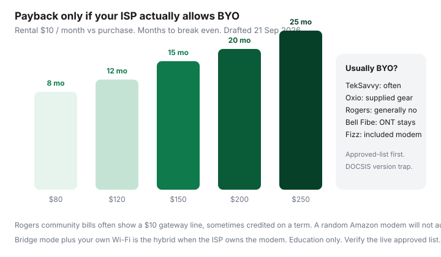

Internet · Canada
Buy vs Rent Your Modem in Canada: ISP Rules, Payback Math, and Compatibility Traps
Canadian households lose money on modems in both directions. They rent a gateway for $10 a month for six years, or they buy a random Amazon DOCSIS stick that will not authenticate on Rogers, Videotron, or Cogeco plant. U.S. “Comcast approved” lists are not a Canadian compatibility matrix. The question is ISP-by-ISP: who allows bring-your-own, which DOCSIS version, what the payback is, and whether fibre even has a modem you can own.
Put the answer on the three-quote sheet. If you are on Fizz or Oxio, the combo is usually in the monthly. If you are threatening a Rogers winback, ask whether the gateway line is waived before you shop hardware.
Disclosure: Compatible DOCSIS modems, Wi-Fi routers, and mesh systems are offer types. Saving Optimizer may earn a commission if we later add partner links. We do not currently claim hardware or ISP partnerships, and we will not name a model that is “guaranteed” on Canadian cable. Verify the ISP’s approved list and return policy before you buy. Education only.
Key takeaways
- Independents (TekSavvy and some other TPIAs) are where BYO cable modems still live — approved list only.
- Rogers retail generally issues its own gateway; community invoices still show ~$10, sometimes offset on a term. Do not assume Comcast-style BYOD.
- Bell Fibe uses a Bell ONT. You usually cannot escape the optical box; you can often add your own router behind it.
- Payback is purchase ÷ rental $/mo. At $10/mo, $150 is 15 months. Firmware and plant upgrades can strand a paid-off modem.
- Hybrid that usually works: ISP modem in bridge mode + your router/mesh + ethernet to the office.
Big-3 vs independents: who allows BYO modem today
| Retailer | Typical equipment rule | BYO notes |
|---|---|---|
| Rogers / Shaw-legacy retail | ISP gateway; ~$10 line appears on many month-to-month bills; often wrapped into term pricing | Retail customers generally cannot register a random DOCSIS modem. TPIAs on Rogers plant may. |
| Bell Fibe | Bell-owned ONT (+ often a Bell router/Wi-Fi) | No cable-modem substitution. Ask about bridge and whether a “home hub” rental is separable. |
| Telus PureFibre | Telus ONT / Wi-Fi hub | Same fibre logic: you do not buy a third-party ONT at Best Buy and light it yourself. |
| Videotron Helix / Fizz | Helix Fi included on qualifying Helix; Fizz modem included ($225 stated value) | Flanker and parent both supply the WAN box. TPIA on Videotron plant is a different approved list. |
| TekSavvy and similar TPIAs | Hardware loan on selected plans; purchase options historically documented | BYO if the exact model is on the list for that plant (Rogers vs Cogeco vs Videotron). |
| Oxio | Equipment included in the monthly | Public pitch is the supplied combo, 60-day guarantee — not a hobbyist modem project. |
DOCSIS version and approved-list reality for cable
Cable last mile is not USB-C. The ISP (or the plant owner behind a TPIA) provisions a MAC address and certificates for a known model. Wrong list, wrong firmware region (Videotron vs Rogers variants of the same chassis), or a used unit still tied to another account = no internet, no refund drama you will enjoy.
- Match DOCSIS 3.0 vs 3.1 vs 4.0 to the speed you bought. A 3.0 modem on a 1 Gbps plan is a paperweight.
- Prefer the ISP PDF or support article dated this year over a 2019 RFD shopping list.
- Canada Computers and ISP store-refurbs beat grey-market imports. Avoid “unlocked for Xfinity” as a Canadian selling point.
- Puma-chipset caution is old lore that still shows up in threads — the approved list is still the gate, not a Reddit chipset debate.
Bell Fibe ONT: why you often cannot escape equipment fees
Glass needs an optical network terminal. Bell owns that conversion. Blogs that say “Rogers BYO saves $144/year, Bell $15 ONT is forever” are directionally describing the architecture even when the dollar figures are stale. Read your bill: some 2026 Bell offers fold Wi-Fi 7 gear into the advertised monthly; others still break out rental. Either way, buying a Motorola cable modem will not light Fibe.
What you can do: put Bell’s box in bridge mode (or IP passthrough) and run a router you understand. That is how you escape the ISP Wi-Fi radio, not the ONT.
Simple payback: rental $/mo vs purchase price

| Purchase | Months to break even | Five-year rent if you never buy |
|---|---|---|
| $80 | 8 | $600 |
| $120 | 12 | $600 |
| $150 | 15 | $600 |
| $200 | 20 | $600 |
| $250 | 25 | $600 |
If the ISP includes the gateway in a term price, buying a modem does not save $10 — there is no $10. If you leave in 11 months, a $150 modem is a loss plus a return headache. If TekSavvy loans hardware at $0 on the plan you picked, BYO is a hobby, not a save.
Firmware and network upgrade risk (DOCSIS refreshes)
Plant upgrades orphan hardware. A paid-off 3.0 modem on a node moving to mid-splits or 3.1-only provisioning becomes e-waste. Independents will eventually require a new approved model; they are not required to make your Amazon invoice whole. Factor a 3–5 year life, not a decade. Fibre ONTs get swapped by the incumbent — you never owned the bet.
Bridge mode + your own Wi-Fi as a hybrid strategy
This is the default for people stuck with an ISP gateway:
- Place the ISP modem where the coax/fibre enters, not in a pantry Faraday cage.
- Enable bridge / IP passthrough so only one router does DHCP and Wi-Fi.
- Run ethernet to the office and the TV. Mesh nodes on wireless backhaul are a compromise, not magic.
- Turn off the ISP radio if the UI allows, to avoid dual-NAT and overlapping SSIDs.
A decent Wi-Fi 6/6E router or a small mesh kit is the affiliate-safe gear type that still helps when BYO modem is illegal on that account. It does not require a fake ISP partnership.
Affiliate-safe gear types (modem, router) — verify ISP list first
- Approved DOCSIS modem — only after the TPIA list names the SKU and plant.
- Wi-Fi router — when you can bridge the ISP box.
- Mesh — brick apartments and three-floor houses; ethernet backhaul if possible.
- Cat6 patch cables — cheaper than another 500 Mbps of plan speed you will never see over Wi-Fi.
Skip “best modem 2026” listicles that do not mention Rogers vs Videotron certificates. Skip predatory financing on a $180 radio. If Connecting Families or a rural WISP issued the gear, do not swap it without asking — you can eat a non-return fee for no gain.
Sources & date stamps
- TekSavvy.com — independent hardware/loan language and address-specific plant (used 21 Sep 2026).
- Oxio.ca — equipment included, 60-day guarantee (used 21 Sep 2026).
- Fizz.ca — included modem, $225 stated value (used 21 Sep 2026).
- r/CanadianBroadband, r/Rogers, RedFlagDeals modem threads — Rogers gateway ~$10; TPIA approved-list practice; no retail Rogers BYO. Anecdotes, not a spec sheet.
- Rogers public plan cards (21 Sep 2026) — gateway treated as part of the Xfinity package rather than a consumer-electronics SKU.
Frequently asked questions
Can I use any DOCSIS 3.1 modem on Rogers?
Usually no if you are a Rogers retail customer. Rogers has long required its gateway; community bills show a ~$10 line, sometimes credited on a term. Independents on Rogers plant may allow specific approved models. The MAC/certificate has to be provisioned. A U.S. retail box often fails.
Why won’t buying a modem kill my Bell Fibe fee?
Fibe’s optical network terminal is Bell’s interface to glass. You typically cannot substitute a cable modem. You may still put your own router behind the ONT in bridge/DMZ mode. Confirm the live equipment charge on your bill rather than a blog’s $15.
How fast does a $150 modem pay back at $10/month?
Fifteen months, ignoring tax, time-value, and the next DOCSIS refresh. If you might move ISPs in a year, rent or take the included combo.
Is Oxio a BYO-modem play?
Oxio’s public offer is equipment included. Comparisons in 2026 describe supplied gear, not a bring-your-own path. TekSavvy is the more typical approved-list ISP.
What should I buy if the ISP owns the modem?
A router or mesh you control, plus ethernet if walls are brick. Confirm the ISP modem can pass through (bridge). Do not stack two Wi-Fi radios on default without turning one off.